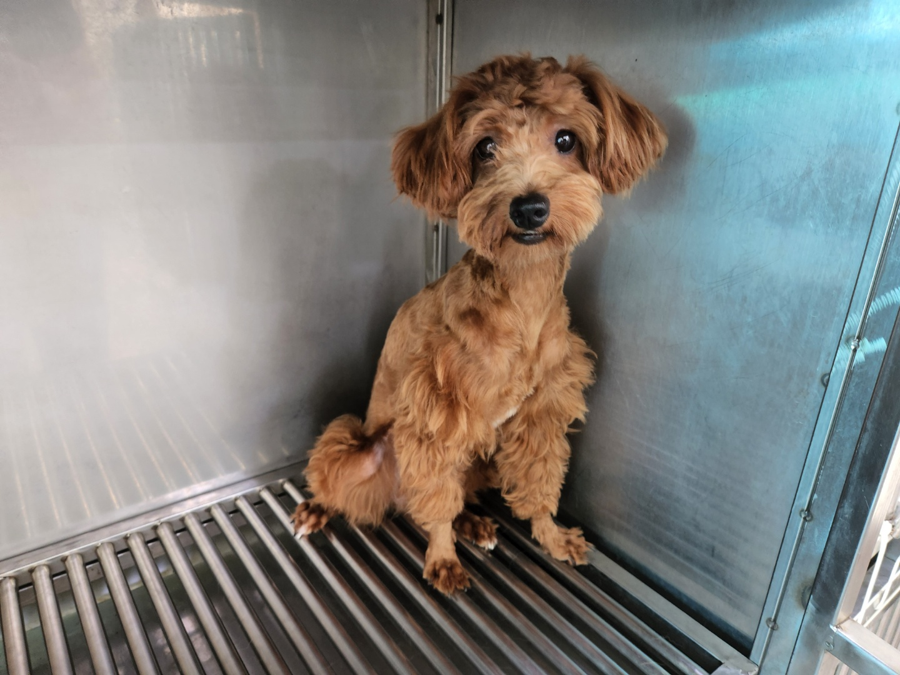
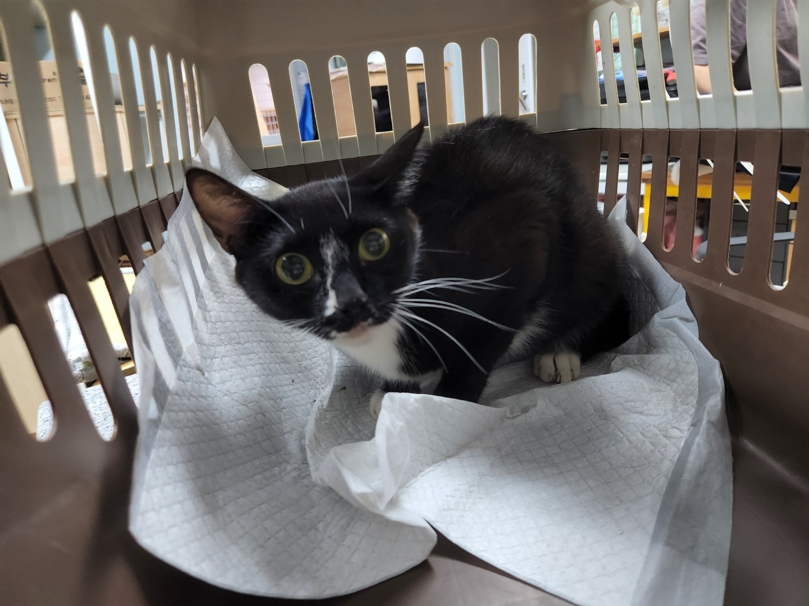
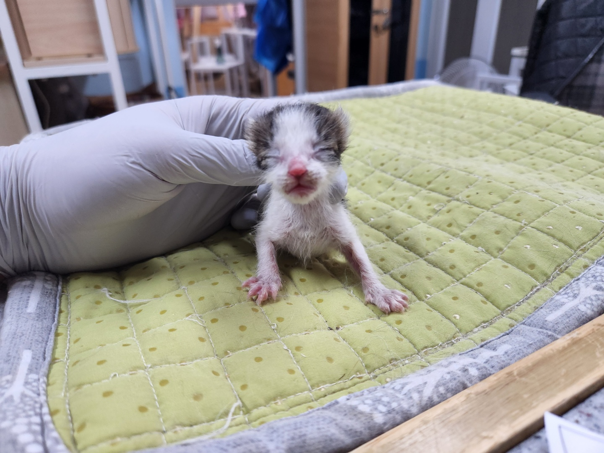
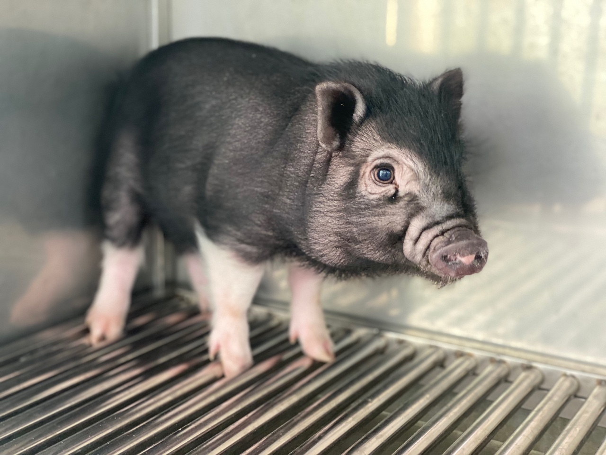

HOME
로그인
사이트맵
대전광역시청
동물보호관리시스템
대전동물보호센터
동물보호센터소개
공지사항
동물보호센터소개
주요업무
유기,유실동물 보호절차
오시는길
동물보호정보
반려생활길잡이
분실과유기
소유자준수사항
동물등록제
보호동물
참여마당
입양신청
입양후기
입양자교육
찾아주세요
보호동물
대전광역시 동물보호센터의 새식구 소개합니다.
더보기

관리번호 :
22-2-256
품종 :
믹스
발견장소
선화서로23번길 45주변

관리번호 :
22-3-184
품종 :
네로친척
발견장소
덕암동 신탄진 IC주변

관리번호 :
22-5-251
품종 :
코리안 숏헤어
발견장소
용운동 193-12주변

관리번호 :
22-7-123
품종 :
돼지
발견장소
산내 운전면허시험장 주변
공지사항
더보기
대전동물보호센터 입양 유기견 문제
대전동물보호센터 휴관일 안내
유기견입양예정자 사전교육
2022년 유기동물 입양비 지원안네
입양후기
더보기
토요일 입양된 푸들
입양한지 5개월된 깜돌이
5-4입양 우리집 막둥이
네네 입양후기
동물보호정보
반려동물과 함께 살아가기위해
필요한 기본정보를 알려드립니다.
입양참여
상처받은 아이들에게 입양은
마지막 기회이자 유일한 희망입니다.
운영시간 및 연락처
운영시간
10:00 ~ 18:00
점심시간
12:00 ~ 13:00
입양시간
13:00 ~ 16:00
TEL
042-825-1118
FAX
042-825-1330
 대전동물보호센터
대전동물보호센터
대전동물보호센터
대전동물보호센터